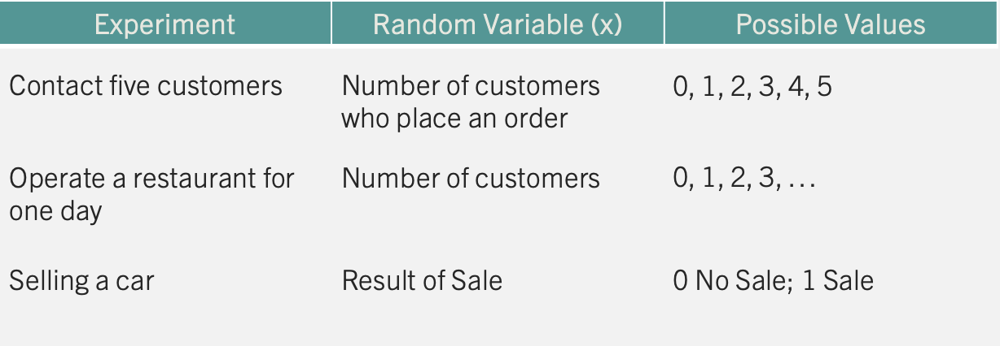
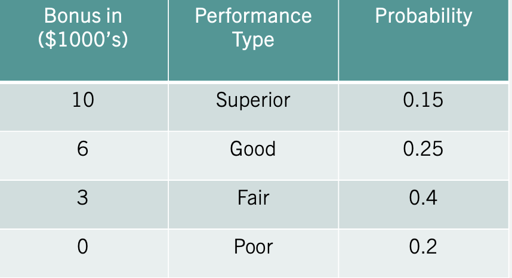

9 Probability II
Studying discrete probability distributions is essential for understanding and predicting outcomes in uncertain scenarios, particularly in business, finance, and data science. These distributions model events with distinct, countable outcomes, such as customer purchases, defect counts, or market trends, enabling decision-makers to quantify risks and optimize strategies. Below, we introduce some popular distributions and their business application.
9.1 Random Variables
The study of probability distributions begins with a random variable. A random variable assigns a numerical value to each possible experimental outcome. The table below presents a collection of experiments along with their corresponding random variables.
For restaurant owners, the number of customers they attract is a crucial variable to monitor. Tracking this variable and its possible values helps in making informed business decisions. Below we will study how this type of experiment and several others behave, so that we can make better decisions. Note that since the outcomes are integer values, the resulting distribution is discrete. The probability mass function (PMF) summarizes the possible values generated by a discrete probability distribution.
9.2 Expected Value and Variance
When summarizing a random variable, we are mostly interested in the variable’s central tendency (Expected Value) and dispersion (Variance).
The expected value (mean) is a measure of central location. For a discrete random variable it is given by:
THE EXPECTED VALUE \[E(x)=\mu=\sum xf(x)\] where \(f(x)\) is the probability mass function. For a continuous random variable it is \(E(x)= \int_{-\infty}^{\infty} x f(x)\, dx\), where \(f(x)\) is the probability density function.
The variance summarizes the deviation of the values of the random variable from the mean. It is calculated by:
THE VARIANCE \[var(x)=E[(x-E(x))^2]=E(x^2)-[E(x)]^2\]
Note that this formula can be used for both discrete and continuous random variables.
Example: Let’s consider an incentive pay scheme for a company. The table below summarizes the scheme:

If a worker receives a “Superior” rating, they earn a $10,000 bonus. Based on years of employee data, the company has determined that a “Superior” rating occurs 15% of the time. It also lists all of the possible ratings of its employees and their likelihood on the table.
To summarize this distribution we can calculate the mean bonus paid. Using the expected value formula we find that the company pays 4,200 dollars on average in compensation.
\[E(x)=(10 \times 0.15) + (6 \times 0.25) + (3 \times 0.4) + (0 \times 0.2)=4.2\] The variability of the compensation is given by: \[var(x)=(100 \times 0.15) + (36 \times 0.25) + (9 \times 0.4) + (0 \times 0.2)-(4.2)^2=9.96\] The expected value and the variance has helped us summarize the results of the company’s incentive scheme. Mainly, the company pays on average an incentive of 4,200 dollars give or take 3,156 dollars.
9.3 Discrete Uniform Distribution
The discrete uniform distribution is a probability distribution that assigns equal probability to each outcome in a finite set of possible outcomes. In other words, each outcome in the set is equally likely to occur.
THE DISCRETE UNIFORM DISTRIBUTION \[f(x)=1/n\] \[E(x)=\frac {\sum x_i}{n}\] \[var(x)=\frac {\sum (x_i-E(x))^2}{n}\] where \(n\) is the number of possible outcomes and \(x_i\) are the possible values.
Example: Consider tossing a fair die. Since all outcomes are equally likely, the probability of the die landing on 6 is \(f(x)=1/6\). The expected value on a roll of a die is \(E(x)=\frac {1+2+3+4+5+6}{6}=3.5\) and the variance is \(var(x)=\frac {(-2.5)^2+(-1.5)^2+(-0.5)^2+0.5^2+1.5^2+2.5^2}{6}\approx 2.92\).
9.4 Binomial Distribution
The binomial distribution is a probability distribution that describes the outcome of a sequence of \(n\) independent Bernoulli trials. In a Bernoulli trial, there are only two possible outcomes: “success” and “failure”. The probability of success is denoted by \(p\), and the probability of failure is denoted by \(q = 1 - p\). In a sequence of \(n\) independent Bernoulli trials, the number of successes (\(x\)) is a random variable that follows a binomial distribution.
THE BINOMIAL DISTRIBUTION \[f(x)=C_x^n (p^x)(1-p)^{n-x}\] \[E(x)=np \qquad var(x)=np(1-p)\] where \(n\) is the number of trials, \(x\) is the number of successes, \(p\) is the probability of success, and \(C_x^n\) is the number of ways there can be \(x\) successes in \(n\) trials.
Example: Consider the following scenario. Imagine your favorite team in the NBA Finals, trailing by 2 points with seconds left. Your star player, a 90% free-throw shooter, gets three shots. What’s the chance your team takes the lead?
Since shooting free-throws can be thought as a binomial experiment, we can find the probability using the binomial probability mass function. To take the lead, the star player needs to make all three shots. We can substitute three into the function:
\[f(3)=C_3^3 (0.9^3)(0.1)^{0}=0.9^3=0.729\]
The function indicates that there is a 72.9% chance of taking the lead.
9.5 The Hypergeometric Distribution
The hypergeometric distribution is a probability distribution that describes the outcome of drawing a sample from a population without replacement. It is used to calculate the probability of drawing a certain number of successes (\(x\)) in a sample of a given size (\(n\)), where the success or failure of each individual draw is dependent on the success or failure of other draws.
The hypergeometric experiment differs from the binomial since:
trials are not independent.
the probability of success changes from trial to trial.
THE HYPERGEOMETRIC DISTRIBUTION \[f(x)=\frac {C_x^r C_{n-x}^{N-r}}{C_n^N}\] \[E(x)=n \frac {r}{N} \qquad var(x)= n \frac {r}{N} \left(1- \frac {r}{N}\right) \left(\frac {N-n}{N-1}\right)\] where \(n\) is the sample size, \(x\) is the number of successes in the sample, \(r\) is the number of successes in the population, and \(N\) is the number of elements in the population.
Example: Picture a box of 12 electric fuses from the manufacturer Ontario Electric. Five fuses are known to be defective. An inspector randomly picks 3 fuses to test. What is the probability that exactly one of the three chosen is defective?
We can use the hypergeometric probability mass function to solve this problem. From the problem we know that \(N=12\), \(n=3\), \(r=5\), and \(x=1\). Substituting these values into the PMF yields:
\[f(1)=\frac {C_1^5 C_{4}^{7}}{C_3^{12}}=0.4772\]
There is a 47.72% chance that the inspector finds a defective fuse in his sample of three.
9.6 Poisson Distribution
The Poisson distribution estimates the number of successes (\(x\)) over a specified interval of time or space.
THE POISSON DISTRIBUTION \[f(x)= \frac {\mu^{x} e^{-\mu}}{x!}\] where \(\mu\) is the expected number of successes in any given interval (and also the variance), and \(e\) is Euler’s number (\(2.71828...\)).
An experiment satisfies a Poisson process if:
The number of successes with a specified time or space interval equals any integer between zero and infinity.
The number of successes counted in non-overlapping intervals are independent.
The probability of success in any interval is the same for all intervals of equal size and is proportional to the size of the interval.
Example: Imagine a fast-food restaurant’s drive-thru where, on average, 10 cars arrive in a 15-minute span. What’s the likelihood of exactly 5 cars showing up in 15 minutes?
We can use the Poisson PMF function for this problem. The arrival rate is 10 cars every 15 minutes. So there are 10 successes in the 15 minute interval. We can substitute values into the PMF:
\[f(5)= \frac {10^{5} e^{-10}}{5!}=0.0378\] There is a 3.78% chance of five cars arriving within a 15 minute interval.
9.7 Discrete Distributions in Excel
Excel has built-in functions for the binomial, Poisson, and hypergeometric distributions. The discrete uniform distribution does not have a dedicated function, but its probabilities are easy to compute by hand.
Probability mass function (PMF). Set the last (cumulative) argument to FALSE to get the probability of an exact value.
- Binomial:
=BINOM.DIST(x, n, p, FALSE). For the basketball example,=BINOM.DIST(3, 3, 0.9, FALSE)→ \(0.729\). - Poisson:
=POISSON.DIST(x, mean, FALSE). For the drive-thru example,=POISSON.DIST(5, 10, FALSE)→ \(0.0378\). - Hypergeometric:
=HYPGEOM.DIST(x, n, r, N, FALSE), wherexis the number of successes in the sample,nis the sample size,ris the number of successes in the population, andNis the population size. For the fuse example,=HYPGEOM.DIST(1, 3, 5, 12, FALSE)→ \(0.4772\). - Discrete uniform: the probability of any single value is
=1/n. For the die,=1/6→ \(0.167\).
Cumulative probabilities. Set the last argument to TRUE to get \(P(X \le x)\).
- Die \(P(X \le 3)\): for the discrete uniform the cumulative probability is \((x-a+1)/n\), so
=(3-1+1)/6→ \(0.5\). - Basketball \(P(\text{at least 2 shots}) = 1 - P(X \le 1)\):
=1 - BINOM.DIST(1, 3, 0.9, TRUE)→ \(0.972\). - For any upper-tail probability, subtract the cumulative from \(1\).
Quantiles. For the binomial, =BINOM.INV(n, p, alpha) returns the smallest value \(x\) such that \(P(X \le x) \ge alpha\). Excel has no inverse function for the Poisson, hypergeometric, or discrete uniform distributions; for those, build a column of cumulative probabilities and read off the smallest value whose cumulative probability reaches the desired percentile.
Generating random numbers. Use the Analysis ToolPak: Data → Data Analysis → Random Number Generation. Choose the distribution (for example, Binomial), enter the parameters (number of trials and probability of success), specify how many values to generate, and Excel fills a column with random draws. You can then summarize them with a PivotTable or a histogram.
9.8 Excel Function Summary
Below is a list of the Excel functions used in this section:
=BINOM.DIST(x, n, p, cumulative)returns the binomial probability. UseFALSEfor the PMF andTRUEfor the cumulative distribution.=BINOM.INV(n, p, alpha)returns the smallest value of \(x\) for which the cumulative binomial probability is at leastalpha.=POISSON.DIST(x, mean, cumulative)returns the Poisson probability (FALSEfor the PMF,TRUEfor the cumulative distribution).=HYPGEOM.DIST(sample_s, number_sample, population_s, number_pop, cumulative)returns the hypergeometric probability.Data Analysis ToolPak → Random Number Generation draws random values from a chosen distribution.
9.9 Exercises
The following exercises will help you practice some probability concepts and formulas. In particular, the exercises work on:
Calculating probabilities for discrete random variables.
Calculating the expected value and standard deviation.
Applying the binomial, Poisson and hypergeometric probability distributions.
Answers are provided below. Try not to peek until you have formulated your own answer and double checked your work for any mistakes.
Exercise 1
For the following exercises, make your calculations by hand and verify results with a calculator or Excel.
- Consider the table below. Calculate the mean and standard deviation. What is the probability that \(x<15\)?
| \(x\) | 5 | 10 | 15 | 20 |
| \(P(X=x)\) | 0.35 | 0.3 | 0.2 | 0.15 |
Answer
The expected value is \(10.75\) and the standard deviation is \(5.31\). The probability of \(x<15\) is \(0.65\).
In Excel, enter the values x in column A and the probabilities P(X=x) in column B:
=SUMPRODUCT(A2:A5, B2:B5)→ \(10.75\) (expected value)=SQRT(SUMPRODUCT((A2:A5-10.75)^2, B2:B5))→ \(5.31\) (standard deviation)- \(P(x<15) = 0.35 + 0.3 = 0.65\)
- Consider the table below. Calculate the mean and standard deviation. What is the probability that \(x\geq-9\)?
| \(y\) | -23 | -17 | -9 | -3 |
| \(P(Y=y)\) | 0.5 | 0.25 | 0.15 | 0.1 |
Answer
The expected value is \(-17.4\) and the standard deviation is \(6.86\). The probability of \(x \geq -9\) is \(0.25\).
In Excel, with y in column A and P(Y=y) in column B:
=SUMPRODUCT(A2:A5, B2:B5)→ \(-17.4\)=SQRT(SUMPRODUCT((A2:A5-(-17.4))^2, B2:B5))→ \(6.86\)- \(P(y \geq -9) = 0.15 + 0.1 = 0.25\)
- The returns on a couple of funds depends on the state of the economy. The economy is expected to be Good with a probability of 20%, Fair with probability of 50% and Poor with probability of 30%. Which fund would you choose if you want to maximize your return? What would you choose if you really dislike risk?
| State of Economy | Fund 1 | Fund 2 |
|---|---|---|
| Good | 20 | 40 |
| Fair | 10 | 20 |
| Poor | -10 | -40 |
Answer
Both funds have the same expected return of \(6\). The safest return comes from fund 1 since the standard deviation is only \(11.14\) vs. \(31.05\) for fund 2.
In Excel, enter the probabilities in column A, Fund 1 in column B, and Fund 2 in column C:
=SUMPRODUCT(A2:A4, B2:B4)→ \(6\) (Fund 1 expected return)=SUMPRODUCT(A2:A4, C2:C4)→ \(6\) (Fund 2 expected return)=SQRT(SUMPRODUCT((B2:B4-6)^2, A2:A4))→ \(11.14\) (Fund 1 std. dev.)=SQRT(SUMPRODUCT((C2:C4-6)^2, A2:A4))→ \(31.05\) (Fund 2 std. dev.)
Since both funds have the same expected return, choose Fund 1 — it achieves that return with much less risk.
Exercise 2
- Use the table below. A portfolio has 200,000 dollars invested in Asset \(X\) and 300,000 dollars in asset \(Y\). If the correlation coefficient between the two investments is \(0.4\), what is the expected return and standard deviation of the portfolio?
| Measure | X | Y |
|---|---|---|
| Expected Return (%) | 8 | 12 |
| Standard Deviation (%) | 12 | 20 |
Answer
The expected return of the portfolio is \(10.4\) and the standard deviation is \(14.60\).
The portfolio weights are \(\alpha=2/5=0.4\) for X and \(\beta=3/5=0.6\) for Y. In Excel:
- Expected return \(\alpha R_1 + \beta R_2\):
=0.4*8 + 0.6*12→ \(10.4\) - Standard deviation \(\sqrt{\alpha^2 \sigma_1^2+\beta^2 \sigma_2^2+2\alpha\beta\rho\sigma_1\sigma_2}\):
=SQRT(0.4^2*12^2 + 0.6^2*20^2 + 2*0.4*0.6*0.4*12*20)→ \(14.60\)
Exercise 3
- Let \(Z\) be a binomial random variable with \(n=5\) and \(p=0.35\) use the binomial formula to find \(P(Z=1)\), \(P(Z \geq 2)\). What is the expected value and standard deviation of \(Z\)?
Answer
\(P(Z=1)=0.31\), and \(P(Z \geq 2)=0.57\). The expected value is \(np=1.75\) and the standard deviation is \(\sqrt{np(1-p)}=1.067\).
In Excel:
=BINOM.DIST(1, 5, 0.35, FALSE)→ \(0.31\)=1 - BINOM.DIST(1, 5, 0.35, TRUE)→ \(0.57\)
- Let \(W\) be a binomial random variable with \(n=200\) and \(p=0.77\) use the binomial formula to find \(P(W>160)\), \(P(155 \leq W \leq 165)\). What is the expected value and standard deviation of \(W\)?
Answer
\(P(W>160)=0.14\), and \(P(155 \leq W \leq 165 )=0.45\). The expected value is \(np=154\) and the standard deviation is \(\sqrt{np(1-p)}=5.95\).
In Excel:
=1 - BINOM.DIST(160, 200, 0.77, TRUE)→ \(0.14\)=BINOM.DIST(165, 200, 0.77, TRUE) - BINOM.DIST(154, 200, 0.77, TRUE)→ \(0.45\)
- Sixty percent of a firm’s employees are men. Suppose four of the firm’s employees are randomly selected. What is more likely, finding three men and one woman, or two men and one woman? Does your answer change if the proportion falls to \(50\)%?
Answer
The probabilities are the same. Each event has a probability of \(0.3456\). If the probability changes to \(0.5\) now the event of two women and two men is more likely.
In Excel:
=BINOM.DIST(3, 4, 0.6, FALSE)→ \(0.3456\) (three men)=BINOM.DIST(2, 4, 0.6, FALSE)→ \(0.3456\) (two men)=BINOM.DIST(3, 4, 0.5, FALSE)→ \(0.25\)=BINOM.DIST(2, 4, 0.5, FALSE)→ \(0.375\)
At \(p=0.5\), having two of each is the most likely outcome.
Exercise 4
- Assume that \(S\) is a Poisson process with mean of \(\mu=1.5\). Calculate \(P(S=2)\) and \(P(S \geq 2)\). What is the mean and standard deviation of \(S\)?
Answer
The \(P(S=2)=0.25\) and \(P(S \geq 2)=0.44\). The expected value and the variance is \(1.5\).
In Excel:
=POISSON.DIST(2, 1.5, FALSE)→ \(0.25\)=1 - POISSON.DIST(1, 1.5, TRUE)→ \(0.44\)
- Assume that \(T\) is a Poisson process with mean of \(\mu=20\). Calculate \(P(T=14)\) and \(P(18 \leq T \leq 23)\).
Answer
The \(P(T=14)=0.039\) and \(P(18 \leq T \leq 23)=0.49\).
In Excel:
=POISSON.DIST(14, 20, FALSE)→ \(0.039\)=POISSON.DIST(23, 20, TRUE) - POISSON.DIST(17, 20, TRUE)→ \(0.49\)
- A local pharmacy administers on average \(84\) Covid-19 vaccines per week. The vaccines shots are evenly administered across all days. Find the probability that the number of vaccine shots administered on a Wednesday is more than eight but less than \(12\).
Answer
The probability of administering more than \(8\) but less than \(12\) shots is \(0.3\).
If \(84\) shots are administered on average weekly, then \(12\) are administered daily. Using this daily mean in Excel:
=POISSON.DIST(11, 12, TRUE) - POISSON.DIST(8, 12, TRUE)→ \(0.30\)
Exercise 5
- Assume that \(X\) is a hypergeometric random variable with \(N=25\), \(S=3\), and \(n=4\). Calculate \(P(X=0)\), \(P(X=1)\), and \(P(X \leq 1)\).
Answer
\(P(X=0)=0.58\), \(P(X=1)=0.37\), and \(P(X \leq 1)=0.94\).
In Excel (successes in population \(r=3\), population \(N=25\), sample \(n=4\)):
=HYPGEOM.DIST(0, 4, 3, 25, FALSE)→ \(0.58\)=HYPGEOM.DIST(1, 4, 3, 25, FALSE)→ \(0.37\)=HYPGEOM.DIST(1, 4, 3, 25, TRUE)→ \(0.94\)
- Compute the probability of at least eight successes in a random sample of \(20\) items obtained from a population of \(100\) items that contains \(25\) successes. What are the expected value and standard deviation of the number of successes?
Answer
The probability is \(0.078\).
In Excel (successes in population \(r=25\), population \(N=100\), sample \(n=20\)):
=1 - HYPGEOM.DIST(7, 20, 25, 100, TRUE)→ \(0.078\)
- For \(1\) dollar a player gets to select six numbers for the base game of Powerball. In the game, five balls are randomly drawn from \(59\) consecutively numbered white balls. One ball, called the Powerball, is randomly drawn from \(39\) consecutively numbered red balls. What is the probability that a player is able to match two out of five randomly drawn white balls? What is the probability of winning the jackpot?
Answer
The probability of matching two white balls is \(5\%\). Winning the jackpot is extremely unlikely! A probability of \(0.00000000512\). It is more likely to be struck by lightning according to the CDC.
In Excel, treat the five drawn white balls as the successes in a population of \(59\), with the player’s five picks as the sample:
=HYPGEOM.DIST(2, 5, 5, 59, FALSE)→ \(0.05\) (match two white balls)
For the jackpot, multiply the probability of matching all five white balls by the probability of matching the single Powerball (1 of 39):
=HYPGEOM.DIST(5, 5, 5, 59, FALSE) * HYPGEOM.DIST(1, 1, 1, 39, FALSE)→ \(0.00000000512\)